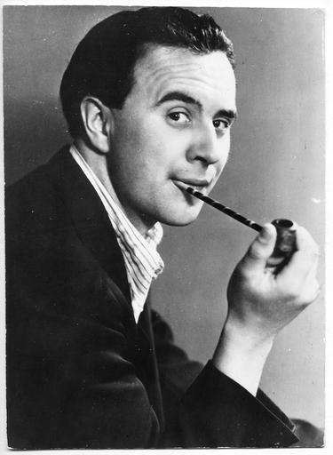
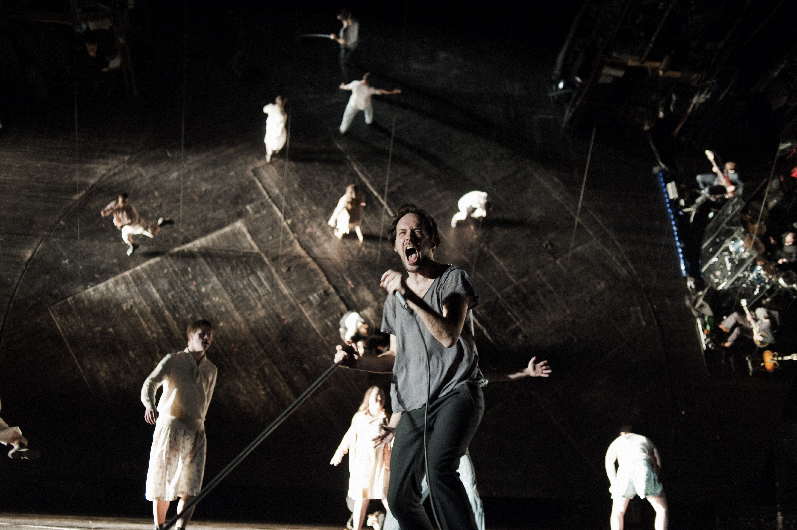
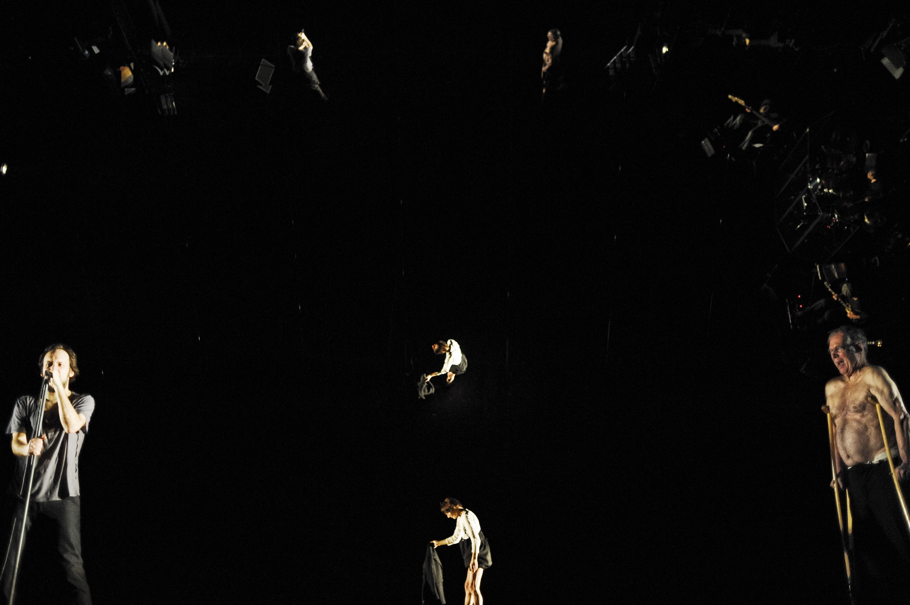
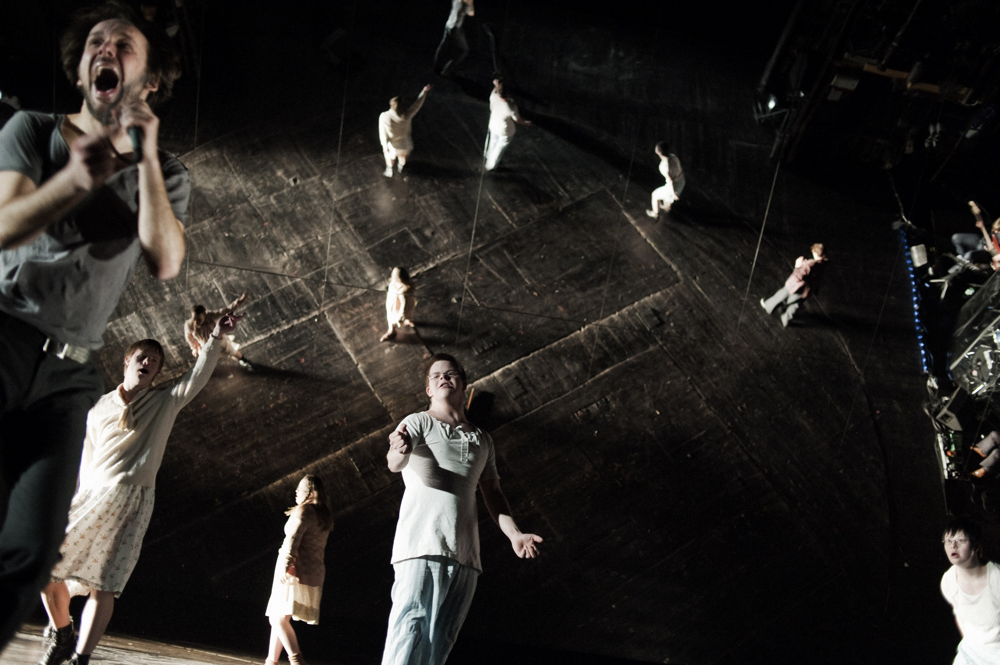
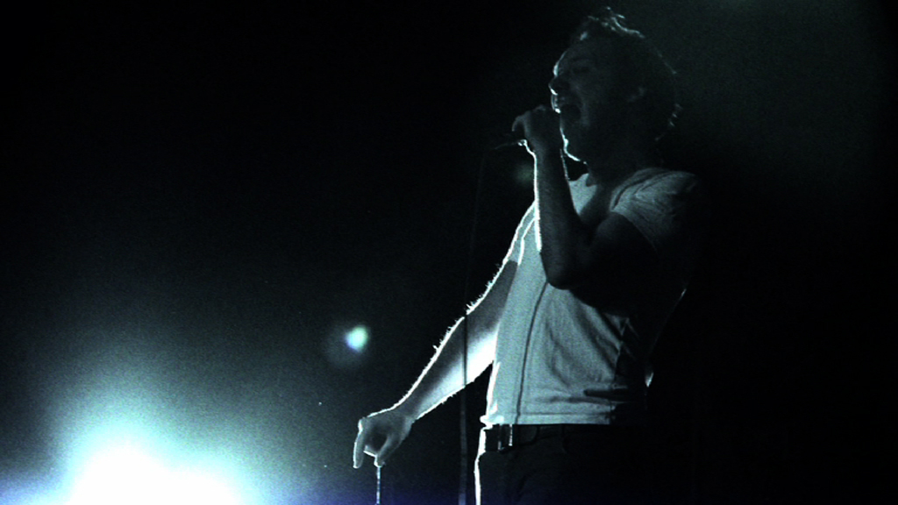
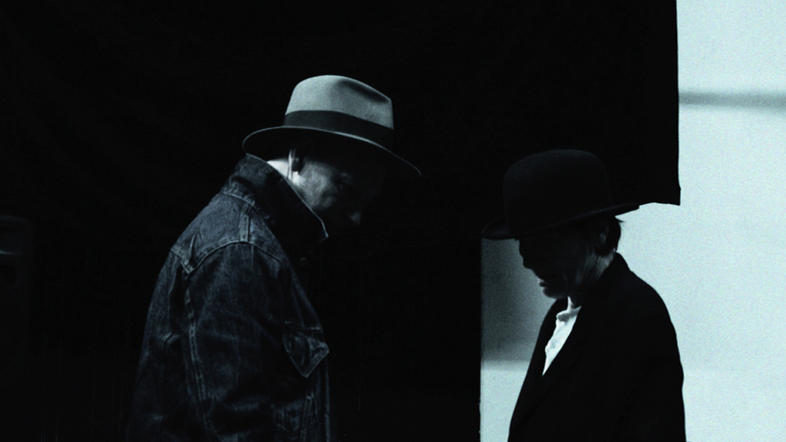
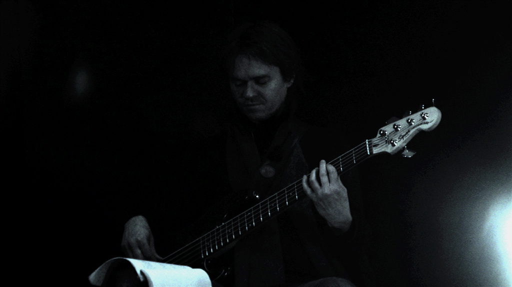
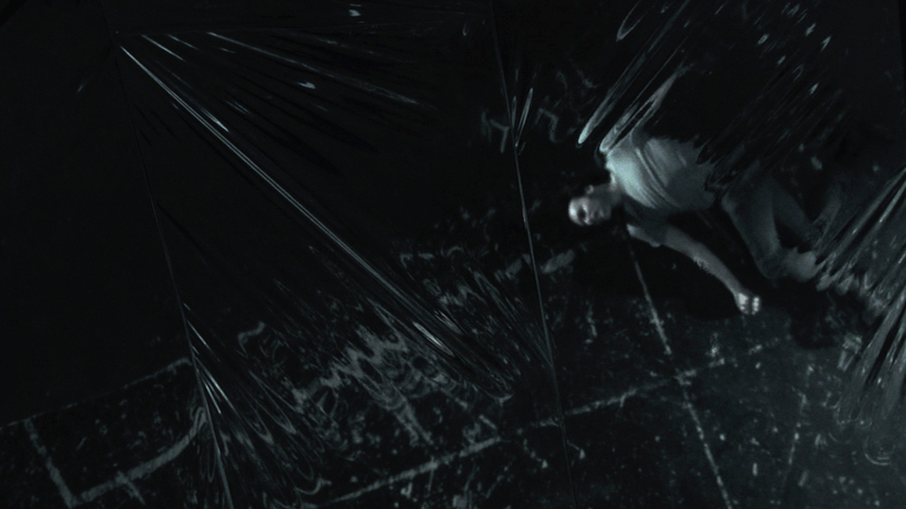
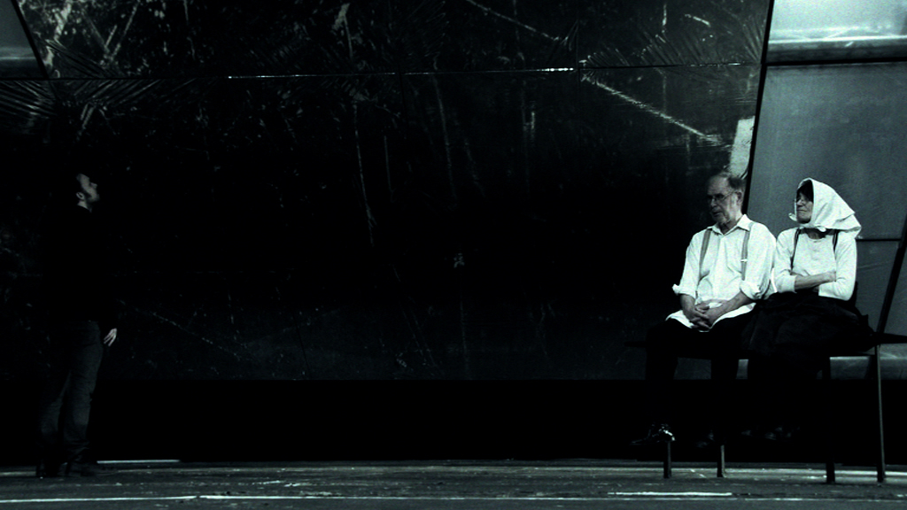

Draußen
vor der Tür
Wolfgang Borchert
Wolfgang Borchert

- *20.05.1921 in Hamburg, als Sohn eines
Volksschulehrers und einer Autorin
- 1939: Beginn einer Buchhändlerlehre
- 1940: Abbruch der Lehre zugunsten von
Schauspielunterricht
- 1941: Engagement als Schauspieler an der Landesbühne
Ost-Hannover
Schönste Zeit seines Lebens - aus seinem Lebenstraum gerissen.
Wolfgang Borchert - Kriegszeit
- 1941:
- Einzug zum Wehrdienst und Ausbildung zum Panzergrenadier
- Augenzeuge schwerer, verlustreicher Schlachten gegen sowjettische Truppen
- Äußert sich in Briefen kritisch zu Krieg und NS
Nazi Propaganda redet von heroisch-völkischen Siegen
Wolfgang Borchert - Kriegszeit
Die Freiheit ist tot. Alle Freiheit. Wohl haben wir unser inneres Reich - aber woran sollen wir noch glauben?
Da sitzen wir in Neros Mantel und singen - während alles versinkt und untergeht.
Wolfgang Borchert - Kriegszeit
Meine Kameraden, die vor vierzehn Tagen herausgekommen sind, sind alle gefallen. Für nichts und wieder nichts.
Wolfgang Borchert - Kriegszeit
Ich empfinde die Kasernen als Zwingburgen des Dritten Reiches.
Wolfgang Borchert - Kriegszeit
Ich fühle mich selbst als wesenlosen Kuli der braunen Soldateska.
Wolfgang Borchert - Kriegszeit
- 1942:
- Verwundung auf Patrouillengang und Diphterie
- Überführung in Heimatlazarett Schwabach
- Untersuchungshaft wegen Vorwurf der Selbstverstümmelung
- Beantragung der Todesstrafe (Tod durch Erschießen)
Wolfgang Borchert - Kriegszeit
- 1942:
- Freispruch von der Todesstrafe
- Fortsetzung der U-Haft durch Anklage wegen "staatsgefährdender" Briefe
- Sechswöchige "verschärfte" Haft mit anschließender "Frontbewährung"
Sitzt in der Zelle und wartet auf den Tod
Wolfgang Borchert - Kriegszeit
- 1943:
- Auftritt im "Bronzekeller" als Kabarettist währen Urlaub in Hamburg
- Entlassung aus dem Kriegsdienst wegen Lebererkrankung
- Freistellung für ein Fronttheater
- Stattdessen Inhaftierung wegen einer Parodie auf Propagandaminister Dr. Goebbels
Wolfgang Borchert - Kriegszeit
- 1944:
- Verurteilung wegen "Zersetzung der Wehrmacht"
- Gefängishaft von neun Monaten; Entlassung zur Feindbewährung an der Front
- 1945:
- Borcherts Truppe stellt sich der franz. Streitmacht
- Während des Abtransportes gelingt ihm die Flucht
Die Nachkriegszeit
- Borchert ist schwer krank und geschwächt durch den Krieg
- Regieassitenz am Hamburger Schauspielhaus
- Viele Kurzgeschichten
- Innerhalb einer Woche schreibt er "Draußen vor der Tür"
- 1947:
- Borchert stirbt einen Tag vor der Uraufführung
Inhalt - Vorspiel
Der Wind stöhnt. Die Elbe schwappt gegen die Pontons. Es ist Abend. Der Beerdigungsunternehmer. Gegen den Abendhimmel die Silhouette eines Menschen
- ...der zu Beginn ins Wasser springt (Beckmann?)
- Gott beklagt seine Kinder. Er ist der Gott, an den keiner mehr glaubt
- Der Tod profitiert von der großen Anzahl an Todesopfern: Rums!
- der ALTE MANN tritt auf und die Szene entpuppt sich zu einem Gespräch zwischen Gott und dem Tod
- ...Kinder, die er nicht retten kann. Sie ermorden sich gegenseitig
- Der BEERDIGUNGSUNTERNEHMER rülpst ununterbrochen
Inhalt - Der Traum
In der Elbe. Eintöniges Klatschen kleiner Wellen. Die Elbe. Beckmann
- Beckmanns Selbtsmordversuch schlägt fehl
- Die ELBE weist Beckmann hart zurück: (...) ich scheiß auf deinen Selbstmord!
- Beckmann hat Hunger, humpelt und seine Frau hat einen neuen
Inhalt - Erste Szene
Abend. Blankensee. Man hört den Wind und das Wasser. Beckmann. Der Andere
- Der ANDERE tritt auf: Ich bin der Optimist (...), der Jasager bin ich.
- Beckmann weist ihn zurück: Beckmann sagte sie, wie man zu einem Tisch Tisch sagt.
- und weiter: sein verstorbener Sohn
- Beckmann berichtet weiter von seinem im Trümmerfeld verstorbenen Sohn, den er noch nie zu Gesicht bekommen hat
Inhalt - Erste Szene
Abend. Blankensee. Man hört den Wind und das Wasser. Beckmann. Der Andere
- Das MÄDCHEN tritt auf: Fisch
- Schluss: Dann stehen sie wieder vom Sterbebett auf und sind gesund wie zehntausend Hirsche im Februar.
- Das MÄDCHEN tritt auf. Sie hat Mitleid mit Beckmann, den sie zärtlich Fisch nennt. Sie nimmt ihn mit zu sich nach Hause
Inhalt - Zweite Szene
Ein Zimmer. Abends. Eine Tür kreischt und schlägt zu. Beckmann. Das Mädchen
- Beckmanns Gasmaskenbrille: Sie macht sich lustig, er braucht sie
- Sie überlässt ihm die Jacke ihres Mannes
- Der EINBEINIGE tritt auf. Er fordert seinen Mantel und seine Frau zurück: Beckmann...Beckmann...Beckmann!!!
- Der EINBEINIGE ruft immer wieder Beckmanns Namen
Inhalt - Zweite Szene
Ein Zimmer. Abends. Eine Tür kreischt und schlägt zu. Beckmann. Das Mädchen
- Beckmann flüchtet
- Unteroffizier Beckmann → Schuldgefühle
- Der ANDERE schlägt vor, den OBERST zu besuchen und ihm die Verantwortung zurückzugeben.
- Beckmann will sich erneut in die Elbe stürzen
- Der ANDERE hält Beckmann auf und entlockt ihm eine Erzählung, dass er Unteroffizier des EINBEINIGEN und mit ihm insgesamt 20 Mann war. An der Verletzung sei er Schuld
Inhalt - Dritte Szene
Eine Stube. Abend. Eine Tür kreischt und schlägt zu. Der Oberst und seine Familie. Beckmann
- Beckmanns Traum vom Meer der Toten
- Beckmann fordert den OBERST auf, die Verantwortung für 11 Mann zurückzunehmen
- OBERST und seine Familie beim Abendessen
- MUTTER und TOCHTER haben Angst vor Beckmanns Erscheinung, der SCHWIEGERSOHN ist aufgebracht von seinen Erzählungen aus dem Krieg
- Beckmanns Traum: Ein General spielt mit dünnen Armprothesen auf einem Xylofon aus Menschenknochen. Das Lied ist ein Marschlied; und zwar Alte Kameraden. Das Meer der Toten erhebt sich aus ihren Gräbern. Nachdem Beckmann die Verantwortung bekommt, brüllen sie immer wieder seinen Namen. Bis er schreiend erwacht
Inhalt - Dritte Szene
Eine Stube. Abend. Eine Tür kreischt und schlägt zu. Der Oberst und seine Familie. Beckmann
- Beckmann erntet Spott, er konfrontiert den OBERST
- und weiter: (...) mein lieber Junge! Werden sie erstmal wieder ein Mensch!!!
- ...und zwar mit der Anzahl Toter, die ihn Nachts besuchen. Der OBERST – sichtlich gerührt – lacht laut auf und beglückt Beckmann zur tollen Vorstellung
- Die Szene löst sich in einem Tumult auf, Beckmann nimmt sich Brot und Rum
Inhalt - Vierte Szene
Ein Zimmer. Der Direktor eines Kabaretts. Beckmann, noch leicht angetrunken
- Beckmanns Vortrag: eine sarkastisch umgedichtete Version des Schlagers Tapfere kleine Soldatenfrau
- Der DIREKTOR fürchtet um sein Publikum:
Ja, Wahrheit! Mit der Wahrheit hat doch die Kunst nichts zu tun!
- Der Vortrag ist ihm nicht heiter genug
Inhalt - Vierte Szene
Ein Zimmer. Der DIREKTOR eines Kabaretts. Beckmann, noch leicht angetrunken
- Beckmann, verbittert, will sich wieder in die Elbe ertränken
- Der ANDERE → Eltern
- Er schöpft erneut Hoffnung als der ANDERE ihm von seinen Eltern erzählt. Er will sie sehen
Inhalt - Fünfte Szene
Ein Haus. Eine Tür. Beckmann
- Fremdes Namensschild am Haus seiner Eltern
- FRAU KRAMER erzählt vom Selbtsmord seiner Eltern
- Der Vater, ein aktiver Nazi, verlor nach dem Krieg Haus und Pension
Inhalt - Fünfte Szene
Ein Haus. Eine Tür. Beckmann
- Na, da haben sie sich dann selbst endgültig entnazifiziert. Das war nun wieder konsequent von Ihrem Alten, das muss man ihm lassen
- Einen Morgen lagen sie steif und blau in der Küche. So was Dummes, sagt mein Alter, von dem Gas hätten wir einen ganzen Monat kochen können
- Beckmann bricht zusammen
Inhalt - Fünfte Szene
Ein Haus. Eine Tür. Beckmann
- In einem Traum wird Beckmann mit allen Figuren des Stücks erneut konfrontiert
- Der ANDERE fährt immer wieder dazwischen: Die Menschen gehen nicht an deinem Tod vorbei, Beckmann. Die Menschen haben ein HerzKomm, Beckmann! Lebe! Die Straße ist voller Laternen. Alles lebt! Lebe mit!
- Doch alle nacheinander enttäuschen Beckmann schwer. Nur der Tod als STRASSENFEGER verspricht ihm eine Tür offen zu lassen
Inhalt - Fünfte Szene
Ein Haus. Eine Tür. Beckmann
- Beckmann erwacht, die Worte des EINBEINIGEN noch im Ohr: Das musst du mir versprechen, dass du deinen Mord nicht vergisst!
- Beckmann resümiert seine Heimkehr, seinen Mord: Wir werden jeden Tag ermordet, und jeden Tag begehen wir einen Mord.
Inhalt - Fünfte Szene
Ein Haus. Eine Tür. Beckmann
- Der ANDERE bleibt stumm
- Gott bleibt stumm
- Gibt denn keiner, keiner Antwort???
Aktuelle Aufführung: Uraufführung
Aktuelle Aufführung: Radio (1949)
Aktuelle Aufführung: Hamburg
Inszenierung Luk Perceval
Band My Darkest Star
Bühne Katrin Brack
Beckmann Felix Knopp
Tod, Gott, Kaberettdirektor Barbara Nüsse
Herr Kramer Peter Maertes
Spieldauer 90 min
Perceval - Bühnenbild
- fast identisch große, leicht geneigte Spiegelwand
- perspektivische Irritation = Beckmanns Innenleben
- Katrin Brack
- Beckmanns verschobenes Innenleben
Perceval - Bühnenbild

Perceval - Bühnenbild

Perceval - Bühnenbild
- Die Zeit (07.04.2011)
Ein Brack-Bühnenbild ist ein zum Raum gewordener einfacher Einfall, der einen Abend in seiner Wirkung zusammenfasst.
Perceval - Inszenierung
- Beckmann eröffnet: allein, ohne Bühnenbild, mit minimalem Licht, lange sucht er einen Anfang. General-Pause.
- Der Spiegel (03.04.2011)
Man spürt es in den ersten Minuten (...), wie Felix Knopp innerlich gegen das klassische, beinahe ikonische Bild anspielt, das Hans Quest in der Hamburger Uraufführung an den Kammerspielen seinerzeit lieferte. (...) ein Mann wie eine offene Wunde.
Perceval - Inszenierung
- auch im späteren Verlauf ändert sich dieses Bild nicht dramatisch
- Die Zeit (07.04.2011)
Percevals Aufführung ist ein Theaterkonzert, in welchem der Schauspieler Felix Knopp (alsBeckmann) auf einer leeren Bühne steht (…). Er spricht Borcherts Text, die Dialoge und die Monologe, er wispert ihn, er heult ihn
- Luk Perceval hat schon öfter versucht, Musiktheater zu inszenieren: Othello in München, Molière-Marathon in Salzburg. (Information ebenfalls aus der Zeit)
Perceval - Inszenierung
- Beckmann wird von Schattenwesen verfolgt.
- Diese Wesen werden von Mitgliedern des Thalia-Theaterprojektes Eisenhans dargestellt, es sind Spieler, die mit dem Down-Syndrom geboren wurden.
Perceval - Inszenierung

Perceval - Szenen
- Laut Zeit ist die Szene Beckmann und OBERST die größte
- Laut Spiegel die Kabarettszene
Wie der abgehobene Mann im Mond glänzt er - reflektiert durch die Spiegelwand - über der Bühne, windet sich im Schmerz seines hingewimmerten Lovesongs im Kreis, er gibt für ein paar Minuten alles. In diesem Moment zeigt sich, was man aus der Inszenierung hätte machen können, wenn man mehr vom Textstaub des Dramas weggeblasen hätte.
- Beckmann will seine Verantwortung für 11 Mann zurückgeben
Perceval - Eindrücke

Perceval - Eindrücke

Perceval - Eindrücke

Perceval - Eindrücke

Perceval - Eindrücke

Perceval - Zusammenfassung
- (...) die Inszenierung bricht nie aus der Nummernrevue Borcherts aus und produziert so am Ende mehr Langeweile als Pointierung. (Der Spiegel 03.04.2011)
- Weder Beckmann noch sein Schöpfer Borchert haben das Jahr 1947 überlebt. Aber beide sind noch da: mitten unter uns. (Die Zeit 07.04.2011)
- Hat denn keiner eine Antwort? (...) Das Theater ist auch dazu da, Fragen zu stellen. Aber wie hieß die Frage an diesem Abend eigentlich noch mal? (Hamburger Abendblatt 04.04.2011)
- Alles in allem ein gelungener Theater-Abend (Im Brechtschen Sinn)
Perceval - Zusammenfassung
- Die Musik funktioniert. Borcherts Sprache klingt einfach gut.
Perceval - Musik-Theater
src="assets/hamburg/schnapssong.mp4"
Perceval - Musik-Theater
src="assets/hamburg/trailer.mp4"
Ich bin auf der Suche nach einem menschlichen Theater. Einem Theater, das nicht nur zeigt, wie monströs der Mensch ist, aber gleichzeitig auch, wie sehr er auf der Suche ist nach Liebe, nach Schutz. Und wie verletzbar und angreifbar der Mensch ist. Und wie wir eigentlich alle in unseren Sehnsüchten, in unseren Ängsten gleich sind. Wir sind alle Kinder von Vater und Mutter, also in dem Sinn ist das eine ewige archaische Ursituation.
Luk Perceval
Aktuelle Aufführung: Bochum
Aktuelle Aufführung: Hamburg
Inszenierung Luk Perceval
Band My Darkest Star
Bühne Katrin Brack
Beckmann Felix Knopp
Tod, Gott, Kaberettdirektor Barbara Nüsse
Herr Kramer Peter Maertes
Spieldauer 90 min
Quellen
- wikipedia.org, Suchwort "Draußen vor der Tür" [Stand: 19.06.2012]
- Bibliothekssystem Universität Hamburg
- Bildungsserver Hamburg
Vielen Dank für die Aufmerksamkeit!